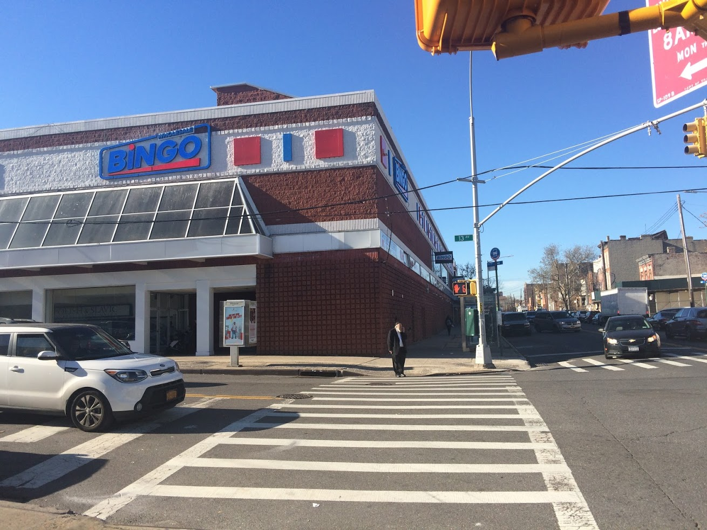

先介绍下背景，刚来美国3个月，英语不溜只会点菜那种，无驾照，无SSN，无工作，F1签证。
一般有美国签证申请英国签证是不会被拒签的，除非你的材料有大问题，所以认真准备都是可以过的
去英国玩是个很仓促的决定，所以我是提前一个月才开始申请的，请不要学我，一般要提前三个月
预约
首先登陆英国签证网站
然后注册一个账号
然后网上填写申请表格，填过DS160的对这个无压力啦。
这个表很长，可以边填边保存
有一项英国期间逗留地址和联系方式可以填宾馆的地址，或者你朋友家地址（我比较害羞不敢问朋友家地址，填的是宾馆的地址……）
住宿最好提前预定，可以上http://www.booking.com/ 预定，免费取消
你预计在英国停留时间必须和你预定的宾馆的时间一定要对上。
做假做的像一点，拿到签证后你爱住几天住几天
然后付钱，申请费我付了110刀，貌似降价了（有加急的，我心比较大，没有预约加急的）。
付完钱之后就可以选择预约去Application Support Center的时间，这个地方很多，每个城市都有，可以选择离自己最近的。离我最近的在曼哈顿，但是时间已经排到明年1月8号了，所以只能预约布鲁克林那个。预约主要是为了录取你的指纹然后给你拍一张照片，美名曰：录取生物信息。
然后返回申请的网站，会有一系列文件要你打印，把它们全部下载打印出来，都会用到的。其中有一个叫Appointment Confirmation的很重要，你录取生物信息的时候会用到。
录指纹
根据预约的时间你要去Application Support Center录取指纹。
布鲁克林的Application Support Center长这样，要不是有谷歌地图我绝对找不到：

我选的时间是中午12点，但是我11点就到了，然而因为排长队我两点钟才弄完，所以建议各位去早一点。
另外，这个center里面手机是没信号的，而且不准玩手机，如果玩手机工作人员会凶你……提前带本书啥的去看吧。
布鲁克林这个Application Support Center很有意思，那一片全是犹太人。全都戴着小帽子，留着小辫子，很有意思，可以留心看一下。
寄材料
一旦取好指纹后，你必须在两周内把所有签证的材料寄出，我由于很急，当天就寄出了，这是我的材料清单：
- 护照
- 护照复印件
- 美国visa
- 旅行计划（酒店订单，机票等
- 在读证明
- 住址证明（银行账单）
- 酒店订单
- I-94
- 两张照片
- 英国签证申请表
- 取指纹的表
- 往返机票
- 预付费信封
- I-20
其中有几个要注意的地方：
旅行计划
我自己也不知道我要去英国玩多久（小伙伴做的旅游攻略，我只是负责拎包），所以我当时预约的时候写了13天，全在伦敦。。这就比较蛋疼了，因为你要编13天的旅行计划。
所以为了凑够天数，我几乎写上了伦敦所有足球俱乐部，我旅行计划是这样的：
阿森纳（Arsenal）
切尔西（Chelsea）
富勒姆（Fulham）
托特纳姆热刺（Tottenham Hotspur ）
西汉姆联（West Ham United）
House of parliament
伦敦塔桥 Tower Bridge
白金汉宫 Buckingham Place
Big ben
westminster Abbey
London Eye
British Museum 2day
Royal Observatory Greenwich
National Gallery
Hyde Park
The Sherlock Holmes Museum
当然，我现在也不知道我到底要玩那些地方。。
在读证明
在读证明找学校的register center要就好了，一般一两天就给你
银行账单
这个……越多越好，我这次用的账单只有3K刀，也过了。另外我的存款证明只有三个月。
I-94
这个表上网下载就好，就是你入境的时候填的表
https://i94.cbp.dhs.gov/I94/#/home
两张照片
照片规格必须是45*35mm
往返机票
当时我也不知道能不能过，也没定，于是找了万能的淘宝，然后淘宝帮我做了一个假的机票行程，80RMB，包括欧洲五国半个月的所有航班。
建议别这样，估计这假的行程只有英国人会信，或者让店小二给你做的真一点。
预付费信封
我用UPS寄的，跟他们说你要个return label，然后一起放到寄的材料里面。
另附一个英国大使馆地址，当时找了好久。
VFS Services USA Inc.
UKVI Scanning Hub
750 Third Avenue
Suite 946
New York
NY 10017
时间
我是11月18日录完指纹
11月18日寄出所有材料
11月21号UPS显示寄到
11月22号大使馆说受到了材料
11月30号说我签证通过
12月2号也就是今天拿到的签证
然后过几天7号要去面签德国签证，很虚。。
这里要吐槽下美国快递，真是垃圾。
我寄过去领事馆用的是UPS Ground，9刀
回来的时候我要求用Next Day，31刀，但是送了2天，目前正在研究怎么找他们麻烦。
然后今天收到的材料是这样的，我交的所有的材料他们都退回给我了，check list没有划勾，在读证明也没有打开。总的来说，他们啥材料都没看……
https://www.gov.uk/government/publications/usa-apply-for-a-uk-visa/apply-for-a-uk-visa-in-the-usa